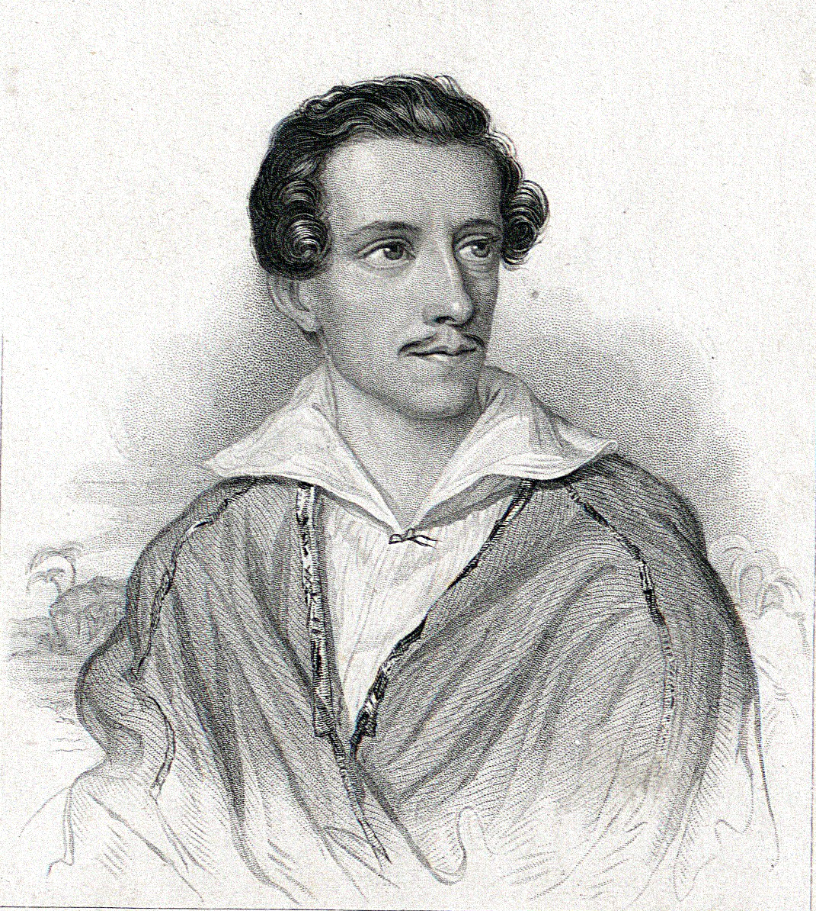

Mędrcy
Adam Mickiewicz

W nieczułej, ale niespokojnej dumie
Usnęli mędrcy — wtem odgłos ich budzi,
Że Bóg widomie objawił się w tłumie
I o wieczności przemawia do ludzi:
«Zabić go — rzekli — spokojność nam miesza;
Lecz zabić we dnie? — obroni go rzesza.»
Więc mędrcy w nocy lampy zapalali
I na swych księgach ostrzyli rozumy
Zimne i twarde jak miecze ze stali;
I wziąwszy z sobą uczniów ślepych tłumy
Szli łowić Boga — a zdrada na przedzie
Prostą ich drogą, ale zgubną wiedzie.
Καβαλάρης
Τζορτζ Λίμπερτ
Έφυγα από κοντά σου πανικόβλητος,
Ήθελα να σε μπερδέψω, να σε εξαπατήσω
Αλλά κάθε μέρα πεισματάρα γόνατα
Άφησαν ίχνη στον ουρανό.
Με πρόλαβες, Blue Rider,
Έχασες, με πάτησες.
Ξάπλωσα χτυπημένος, κομμένος από χάρη,
Σαν καπνός όταν τον λυγίζει ο άνεμος.
로마
줄리어스 슬로바키

갑자기 나는 텅 빈 공유지에서 외치는 소리에 휩싸였다.
로마! 당신은 더 이상 옛 로마가 아닙니다.
그래서 그의 말에 앉아 양 떼의 목자를 불렀습니다.
내 앞에서 진한 파란색 연기
Apennines 아래 궁전의 문자열,
그 위에 거대한 교회가 있습니다.